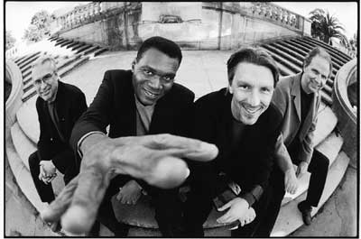
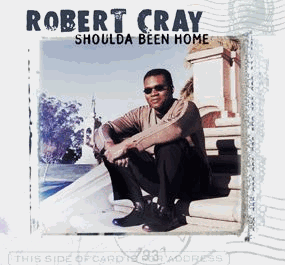

DMG: Состав "The Robert Cray Band" остается прежним в течение вот уже 10 лет, что поразительно для любой группы, а в особенности для группы, которая носит название одного человека. Как Вам это удается? Как Вам удается не дать музыкантам почувствовать себя наемными рабочими?
RC: Разница между нашей группой и другими состоит в том, что мы называемся "The Robert Cray Band" - я нахожусь на переднем краю - я пою и играю на гитаре, но ребята в команде вносят в нашу музыку намного больше, чем думает большинство людей. Музыканты играют на всех студийных записях, а музыку мы пишем вместе. Если у меня возникает замысел песни, я показываю его ребятам, они подбирают соответствующую ритмическую модель, грув, орган, и все что им кажется уместно в этой песне. Мы работаем вместе долгое время и пишем песни как одна команда. У каждого есть право голоса. Это не имеет ничего общего с группой "Роберт Крей и Симпатичные Манекены на Заднем Плане"!
DMG: Вы играли концерт в пользу Красного Креста сразу после террористических атак 11-го сентября. Вы чувствовали, что обязаны как музыкант или как американец сделать это?
RC: Мы возвращались в Штаты из Канады, когда все это произошло. Это была не моя идея, ее предложили промоутеры. Я согласился. Сиэттл был подходящим местом для этого концерта. Он был моим домом, так что мы собрали много людей.
DMG: Вы получили 5 премий Грэмми, Ваш альбом стал дважды платиновым, у Вас 2 золотых альбома, музыка к фильму, и несколько наград. Что на Ваш взгляд осталось довершить?
RC: Я должен оставаться в бизнесе! Должен продолжать работать! То есть все эти вещи, все награды - это нечто, что можно повесить себе на стену. А игра называется «продолжай работать». В этом все и заключается. Мы - группа, которая много работает. Мы не можем просто сидеть и рассуждать: «Ну вот, больше работать не нужно». Мы получаем от работы удовольствие, а в разных частях света есть наши поклонники, люди которые любят нашу музыку. Чего еще желать группе? Очень много групп захотели бы оказаться на нашем месте.
DMG: Вам приходилось выступать с лучшими музыкантами в диапазоне от Джона Ли Хукера и Би Би Кинга до Альберта Коллинза и Роллинг Стоунз. Есть еще кто либо, с кем бы Вам хотелось поработать?
RC: Таки вещи случаются как-бы сами собой. Да, есть такие замечательные музыканты. Мне нравится быть в одном шоу с Доктором Джоном и Тадж Махалом, я просто наслаждаюсь магией их выступлений. Они невероятные люди. Не знаю, что я мог бы сделать вместе с ними. Если бы была какая-то песня или ситуация, в которой я почувствовал, что это уместно, я бы сделал это. Обычно, у меня так это и происходит.
DMG: Мадди Уотерс называл Вас своим «приемным сыном». Как такое «родство» с ним повлияло на Вас как на музыканта?
RC: Замечательно! Мадди Уотерс был просто как король! У него было много приемных сыновей и дочерей. Мне посчастливилось стать одним из них. Братьям Воэнам, Бадди Гаю, Эрику Клэптону, Джуниору Уэллсу и Литтл Уолтеру тоже. Мадди усыновлял каждого, с кем играл, или кто ему нравился! Это как если бы Королева Англии посвятила тебя в Рыцари. Однажды он сказал: "Хочешь быть моим приемным сыном?", и я ответил: "Черт возьми, да!" (смеется) Это была честь для меня. Это было по-настоящему клево.
DMG: Оттис Реддинг, очевидно, был одним из тех, кто на Вас повлиял. На Вашем альбоме играет Бэн Коли (Ben Cauley) из его группы. Должно быть Вам это было приятно!
RC: Работать с ним в одной студии было просто замечательно! К тому же, с нами был Эндрю Лав (Andrew Love), который играл с Оттисом, но не участвовал в гастрольных поездках. Когда мы работали с Эндрю и Уэйном Джексоном, мы наслушались баек вдоволь! Начиная от работы на Stax до гастролей с Оттисом и все такое прочее: Невероятные истории.

DMG: На альбоме "Shoulda been home" есть 2 песни Элмора Джеймса. Почему две, и почему именно его песни?
RC: Стив Джордан (Steve Jordan) предложил сделать песню "Cry for Me". В прежние времена мы делали кавер этой песни. Он предложил использовать контрабас и 30-дюймовый бас-барабан в этой песне, а потом мы посадили Стива за вторую установку. Кевин играл щетками, а Стив палочками или наоборот, в общем в этой вещи у нас звучит 2 установки. Когда мы закончили ее играть, Стив поднялся, чтобы ее прослушать. Обычно мы все вместе идем прослушивать записанное, но в этот раз мы остались и начали "The Twelve Year Old Boy", очень спонтанно. Стив вошел в комнату инженера и услышал, как мы ее играем. Он сказал инженеру снова включить запись. Мы разделили эти песни и включили их в альбом. Поэтому вступление у "The Twelve Year Old Boy" как бы оборванное.
DMG: Некоторые каверы на альбоме прямо на удовольствие широкой публике. Вы не думали сделать альбом состоящий только из каверов?
RC: Нет. Обычно, когда мы пишем песни, мы можем предположить запись кавера, но никогда целый альбом каверов. Для нас это было бы концепцией (смеется). А мы не хотим иметь концепцию!
DMG: У Вас достаточно видео материала, чтобы выпустить видео кассету или ДВД. Это входит в Ваши планы?
RC: Мы сняли видео клип на песню "No One Special" - моя жена написала сценарий клипа и была его режиссером. Мы не думали об этом. У нас есть старая запись на VHS, она вышла уже давно. А новой мы пока не занимаемся.
DMG: Когда Вы начинали играть, вы выступали стоя спиной к публике. Некоторые гитаристы известны тем, что выступали также. В чем причина?
RC: Я до смерти боялся! (смеется) У Хьюберта Самлина (Hubert Sumlin) была другая причина: он говорил мне, что не хочет, чтобы кто-нибудь украл его фирменные приемы игры! А мне просто было страшно! Ричи Казнс (Ritchie Cousins), который долго играл у нас на бас-гитаре, объявлял песни. Я поворачивался только чтобы петь.
DMG: Вы говорили, что Битлз очень сильно повлияли на Вас в прошлом, что многих очень удивило. Какую еще музыку, формирующую Ваш саунд, Вы слушаете?
RC: Я слушаю много старого джаза, трио с органом, квартеты, (Телониуса) Монка, Бразильскую гитарную музыку. То есть, я не играю такую музыку, но мне нравится ее слушать. Мне нравились Битлз, потому что их музыка такая мелодичная. Джимми Хендрикс по-прежнему один из моих кумиров.
DMG: Вы начали писать музыку для нового альбома?
RC: У меня есть куски и отрывки, пока ничего крупного. Мы не собираемся записываться в студии до конца этого года. Поглядим что будет.
Перевод Арсена Шомахова
Оригинал
интервью - Dallas Music Guide, 2002.
Отзывы о новом диске Robert Cray - "Sweet Potato Pie". Перепечатано из журнала Jazz-квадрат.